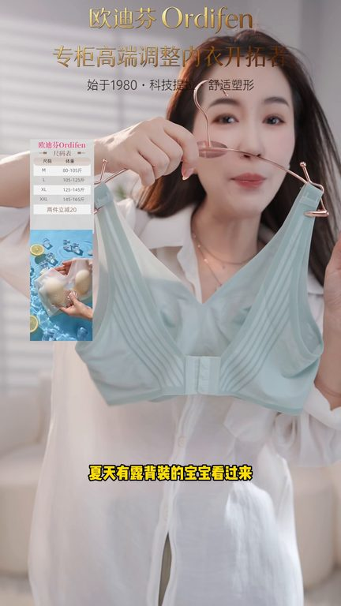
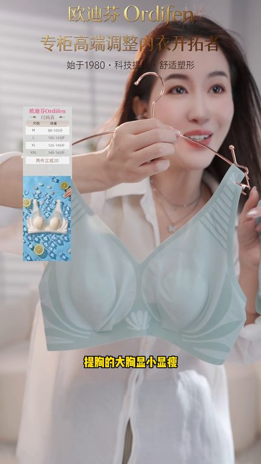
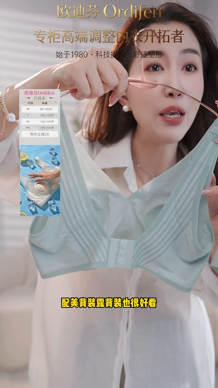

TOP 1 · 代表素材深度拆解
核心放量 稳健
视频为原始素材 HTTPS 链接；点击后加载，建议在网络环境良好时播放。
37.7万素材消耗
1.46%CTR
9.6%类目消耗占比
-0.18pp较类目均值
表现判断
该素材是类目内第 1 名，属于“核心放量”；CTR 低于类目均值。消耗体现承接规模，CTR 体现首屏与定向效率，两项应结合判断，不能仅以单指标下结论。
表达标签
口播三段式证据
开场钩子夏天有陆备装的宝宝看过来这个睡午觉都不用拖的眼睛排口然后女穿逗备装都可以去配的
中段论证提胸的大胸嫌小嫌瘦小胸贴合防空杯临时一下咱们家真正宿生意的面料它是不需要做那个什么钢圈鱼骨的它是两层的塑型纱线是能够收备收复乳防下垂防外扩无论你怎么运斗都不跑背的而且咱们中间做的是乳胶BDR
结尾转化临时一下咱们家真正宿生意的面料它是不需要做那个什么钢圈鱼骨的它是两层的塑型纱线是能够收备收复乳防下垂防外扩无论你怎么运斗都不跑背的而且咱们中间做的是乳胶BDR我们做的不是钢圈我们做的是科技软执在两层面料中间防溜间收复乳收备防卷边而且扁的排口这个排口是睡午觉都不用拖的配美备装陆备装也很好看
有效点
- 消耗占比 9.6% 说明具备投放承接能力，但 CTR 较类目均值低 0.18pp
- 素材已进入类目消耗 Top，核心表达具备继续拆分测试的价值
迭代动作
- 重做前 3–5 秒：结果前置、缩短背景铺垫，并把核心人群直接写进首屏字幕
- 中段每 5–8 秒补一次画面变化或证据点，避免同景口播造成信息疲劳
- 促销口径与资质信息保持同屏可验证，结尾只保留一个明确行动指令
合规关注

钩子建立 · 1.4s

场景/问题展开 · 10.4s
卖点证据 · 23.9s

转化收口 · 32.9s
查看完整口播摘要
夏天有陆备装的宝宝看过来这个睡午觉都不用拖的眼睛排口然后女穿逗备装都可以去配的打卡拍照旅游什么都很好看的提胸的大胸嫌小嫌瘦小胸贴合防空杯临时一下咱们家真正宿生意的面料它是不需要做那个什么钢圈鱼骨的它是两层的塑型纱线是能够收备收复乳防下垂防外扩无论你怎么运斗都不跑背的而且咱们中间做的是乳胶BDR我们做的不是钢圈我们做的是科技软执在两层面料中间防溜间收复乳收备防卷边而且扁的排口这个排口是睡午觉都不用拖的配美备装陆备装也很好看